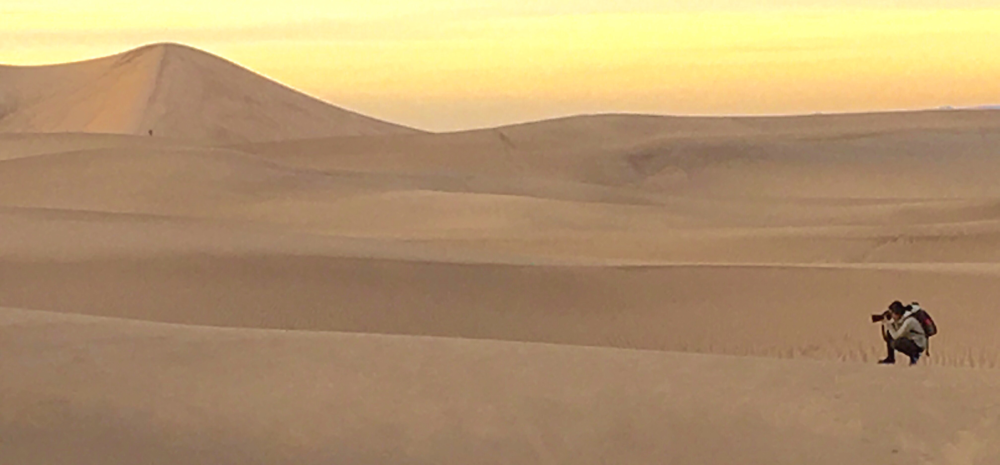

lydiaslens

Behind the Lens
Hi! Welcome to lydiaslens! This is Lydia Liu, creator of this website and photographer of the pictures in my gallery.
I am currently attending Lowell High School. Part-time student, part-time nature photographer. Life can get stressful and busy, but I always take time to step back and smell the roses. For me that's taking time to be in nature. Here you will find some of my photos from my latest adventures. My work focuses primarily on nature and landscape photography.
Check out my Instagram profile for more.
My images
have been featured by Yosemite National Park and various photography organizations' socia media platforms.
When I'm not out in the mountains, you will find me exploring the beautiful city of San Francisco. Email me if you have any inquiries or if you just want to say hello!